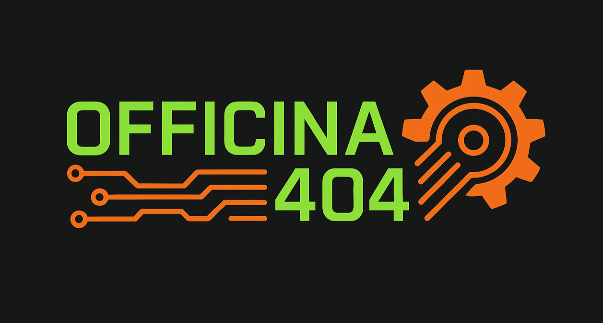

Plataforma de monitoramento edge
Gateway embarcado com ESP32, telemetria MQTT e painel web para rastrear sensores críticos e alertas.
- Documentação de APIs e fluxos de dados
- Camada de segurança com TLS mútua
Officina 404
Para tecnologia e ideias que valem o risco de sair do papel.
Identidade
É sobre fazer funcionar. Um espaço para misturar hardware, software, código estranho e infraestrutura real. Aqui, teoria bonita precisa sobreviver ao teste de bancada.
Eu sou Junior Godoi.
Gosto de tecnologia, eletrônica, código e problemas que ninguém quer assumir.
A Officina 404 é meu espaço para testar ideias, quebrar algumas coisas, consertar outras e compartilhar o processo sem muito enfeite.
Sem fórmula mágica, sem palestra motivacional.
Bem-vindo ao erro 404.
Experimentos técnicos
Protótipos nascidos da curiosidade, excesso de confiança e uma frase: “deve ser simples”.
Gateway embarcado com ESP32, telemetria MQTT e painel web para rastrear sensores críticos e alertas.
Playbooks Ansible para provisionamento, monitoramento SNMP e dashboards Grafana para datacenter.
Ambiente dedicado a pentests, análise de rede e resposta coordenada com logs e playbooks.
Blog técnico
A gente pega conceitos técnicos, desmonta o papo bonito e transforma tudo em explicação prática, sem enrolação, sem pose e sem exigir que você finja que entendeu.

30 Mar. 2026
Durante décadas, a computação melhorou como se existisse um acordo informal entre programadores e fabricantes de chips: o software podia engordar, desperdiçar memória, abusar de abstrações...
Ler artigo30 Abr. 2026
Uma viagem entre ISA, microarquitetura, legado e eficiência energética para entender por que CPUs diferentes existem, por que isso ainda molda PCs, celulares, servidores e IoT, e por que...
Ler artigo30 Mai. 2026
Artigo sobre como o Linux gerencia recursos do sistema e por que entender seu funcionamento interno é essencial para servidores, containers, IoT, segurança e infraestrutura moderna.
Ler artigoContato
Preencha o formulário e respondemos com um plano técnico objetivo.
Conexão direta para hardware, software, infraestrutura e segurança em um único canal.